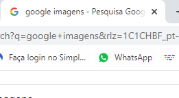

<img>Você pode adicionar imagens au conteúdo HTML como a imagem do exemplo abaixo:
Para colocar essa imagem no seu conteúdo HTML você tem que baixar um imagem específica do seu gosto (PNG ou JPG dependendo do que for utilizar) tratar essa imagem com um editor de imagens, para que ela possa ficar de um tamanho menor (redimensionar) vai colocá-la no mesmo arquivo onde está seu documento HTML e com a tag <img> você vai adicionar a imagem como o exemplo abaixo:
<img scr="nome do arquivo da imagem" alt="nome que vai sobrepor a imagem caso ela não carregue">
E assim a imgagem selecionada aparecerá.
CUIDADO!
Antes de sair pegando qualquer imagem por ai você deve ter pleno conhecimento sobre direitos autorais. Pesquise bem antes e procure imagens em lugares onde possam ser recicladas para uso próprio, exemplo do site Pexels onde você pode baixar imagens para o uso em criação do seu conteúdo.
O que é um favicon?
O favicon é aquela logo do Google por exemplo que fica ali na aba do navegador que você está usando. Se você prestar atenção, em todo site (quase todos) você vê uma logo lá em cima ou como é chamada favicon(imagem de favorito).
Existe uma forma em HTML de colocar esse favicon, com a tag <link rel="shortcut icon" href="nome-da-logo.ico" type="image/x-icon">
Se você notar no href= encontrasse o nome do arquivo da logo e esse aquivo ele é .ico, ou seja, você tem que baixar uma imagem da sua logo nesse formato para que ela possa se adequar ao favicon.
Existe uma forma de você formatar uma imagem, ou emoji ou até mesmo criar um favicon que é no site favicon.io onde ele permite fazer essas alterações e até mesmo fazer download.
ATENÇÃO
Essa tag para adicionar o favicon fica na area de <head> acima do <title> sempre nesse local.